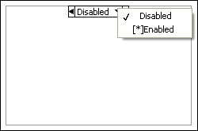

You have not specified an active subdiagram in the Diagram Disable or Conditional Disable structure.
To correct this error for a Diagram Disable structure, right-click the structure border and select Enable This Subdiagram from the shortcut menu.
To correct this error for a Conditional Disable structure, right-click the structure border and select Make This The Default Subdiagram from the shortcut menu.